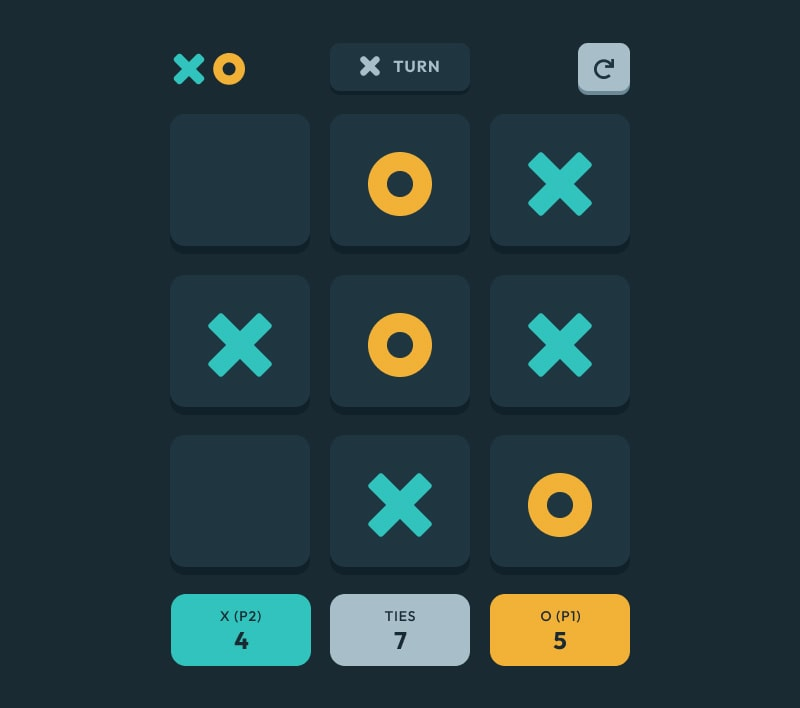
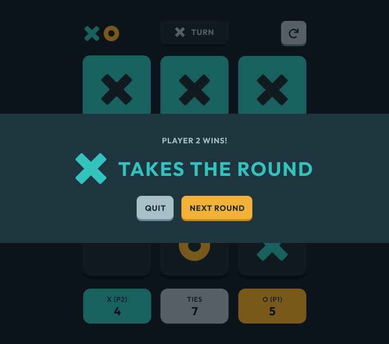
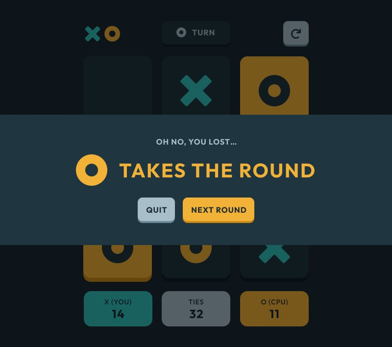
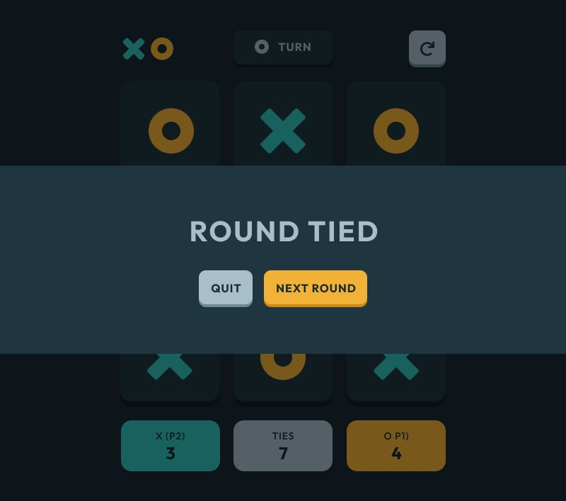

Tic Tac Toe Game

About The Project
This Tic Tac Toe game is a fun and interactive web application that allows users to play the classic game against an AI opponent or with a friend. It features a sleek user interface and smart AI logic, providing an enjoyable gaming experience for all.
View Code View WebsiteMinimax Algorithm
To enhance the solo gameplay experience, I integrated the minimax algorithm into the computer player, ensuring it becomes unbeatable. Challenge yourself and see how long you can last before making a mistake against this formidable opponent.
Built With
Tools Used
The Main Menu
Player 1 gets to select their preferred symbol (X or O), and they can choose between challenging another player or taking on the computer as their opponent.
Tracking
The game keeps track of the outcomes of each round, distinguishing wins, ties, and losses in the scoreboards at the bottom.
Current Turn and Restarting The Game
The game displays the current player's turn in the middle at the top. Additionally, when hovering over an element, the hover state will also reveal the symbol of whose turn it is.
To reset the scores and restart the game, simply click on the button located in the top right corner.
End of Round
After each round, the game will display whether there was a winner, a loser if you're playing solo, or if it resulted in a tie. You also will be given the choice to either proceed to the next round or quit the game and return to the main menu.
  Credit
This project was a Frontend Mentor challenge where I was given the design and assets and entrusted with the task of developing the front end of the project.